第1轮普通输入试玩
第8回合完成
胜利并完成对应战后操作；566次按键记录。
本章“日返”发生在旧塔堡战后。授爵礼前，雪原、粮站、押送所、外营与海峡城应属于同一寒季；不能仅因为关卡换了背景，就突然成为盛夏草地。本轮修正五张外景战斗图，并同步世界图、全图总览和六个室外据点。
保留已确认的整体构图与战术选择。雪覆盖室外土层与植被，清扫泥路、木桥、港栈、石院、室内囚室各保留自己的材质。部署、敌人、交互、剧情、行动数值和人物动画保持。
西南寒区现在连续覆盖第一章节点。世界图的道路、坐标、解锁与移动数据没有改动；仪式前渲染冬季地面和植被，仪式完成后恢复原有大地图。全图缩放使用同一冬景数据。
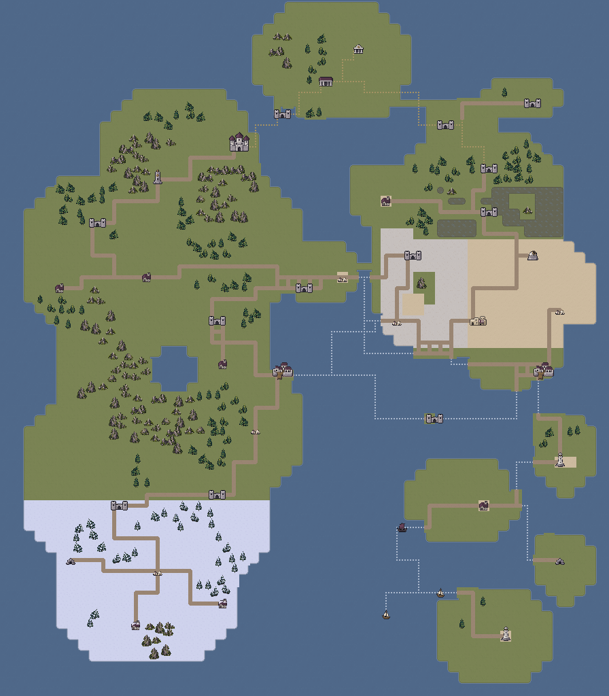
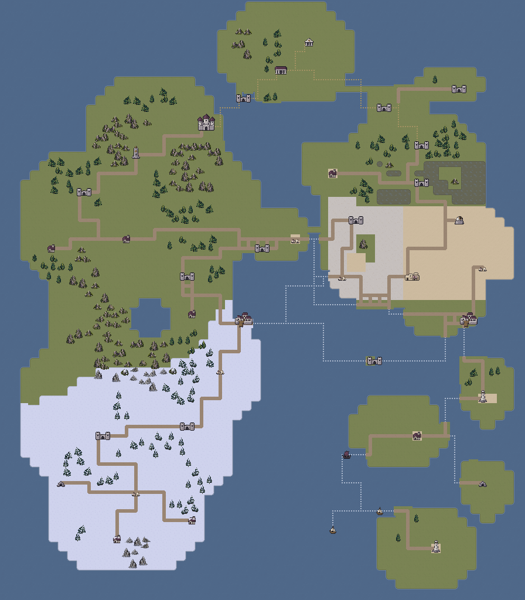
以上为同一套原生瓦片组成的完整地形底图；下面是实际存档经普通按键进入世界与全图界面的引擎视口。
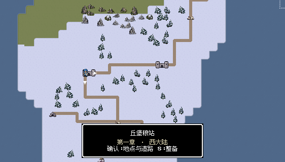
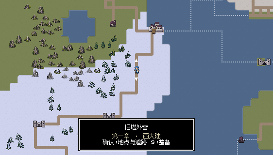
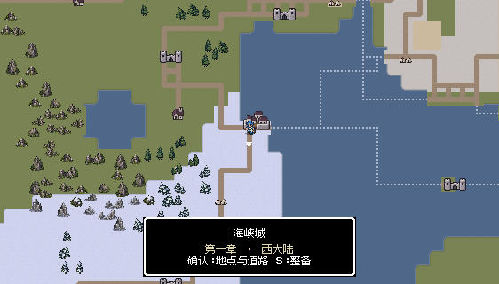
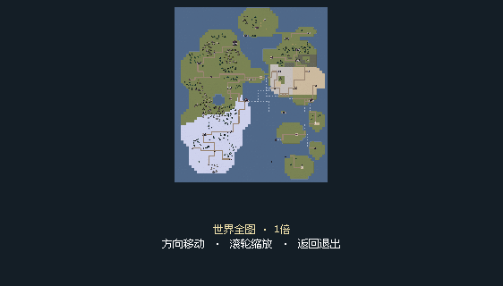
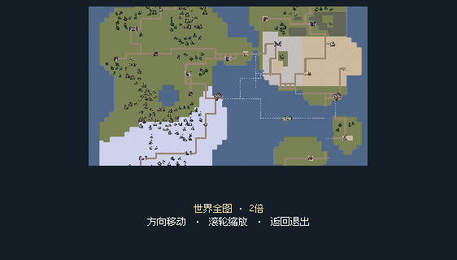
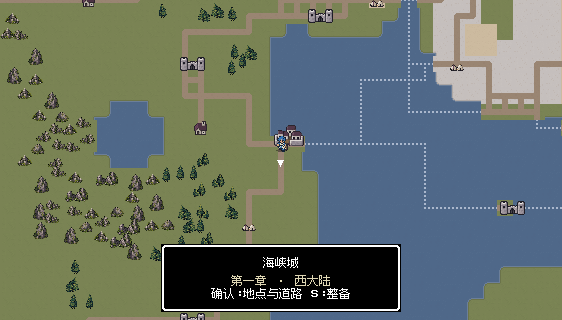
原有积雪、雪松、道路与双桥已经符合本章冬季设定。地图文件保持原样，作为其他外景的气候参照。
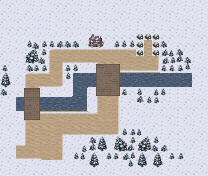

M11源数据与修改前逐字节相同。本轮连续流程由M11真实通关记录出发，没有重新修改或重新通关M11。
粮站周边改为雪原与雪松；主路、运输院和交接场保留压实裸土。仓顶、诊所屋檐与岩石改用同尺寸冬景，原有两条进攻路线及护粮目标不变。

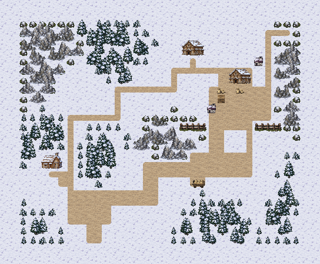
河岸和林带有雪，河水继续流动，横桥仍为木板。道路保留裸土，两个去顶囚室及开门门槛仍用室内石地，不向室内铺雪。
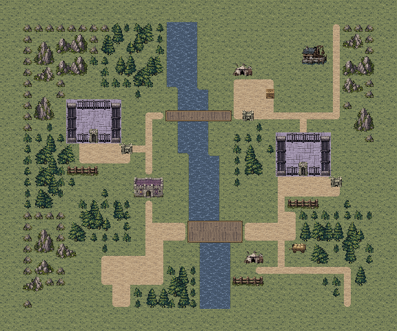
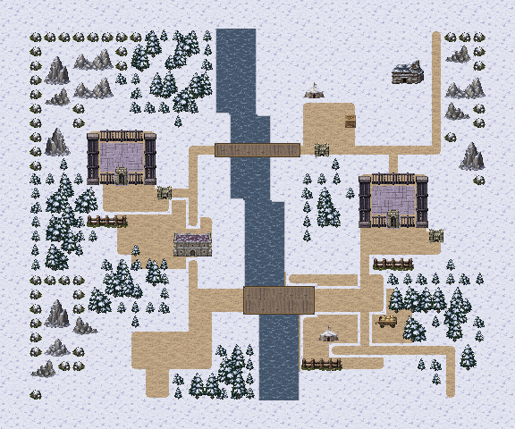
胜利并完成对应战后操作；1,004次按键记录。
胜利并完成对应战后操作；1,074次按键记录。
雪松和冬岩包围清扫出的营道与集结场，帐顶积雪。双哨卡、投降对象与道路几何均保持，泥路和雪地在视觉上分清。

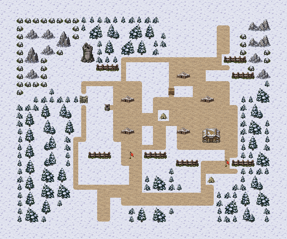
海岸外缘覆雪，院内石坪与港栈清扫；屋顶、海崖草冠及岩石改为冬景。牢室保留室内石地，木栈保留木板，海水没有被改成可通行冰面。
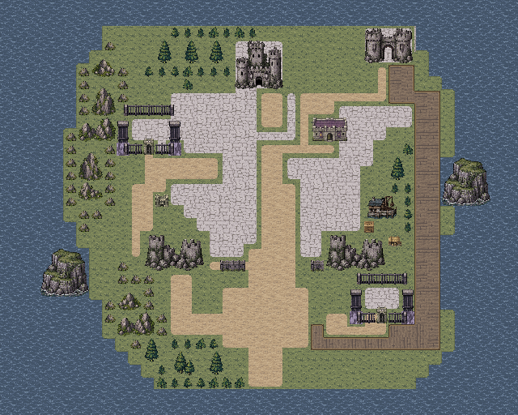
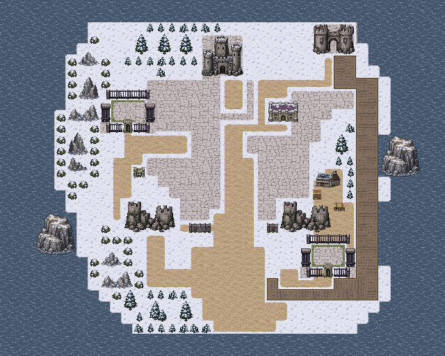
地图发生在矿道内部，洞外大世界是雪地不代表矿厅也应积雪。原有岩地、轨道、坑壁和矿口保持，文件逐字节不变。
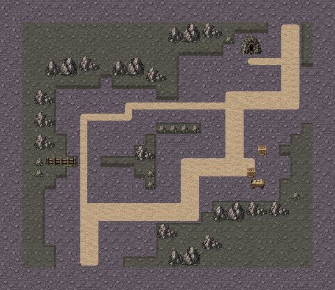

诊所周围改成积雪村落，雪松、冬岩和积雪屋顶与世界图一致。渡河仍沿原木桥，河道保持流动；屋前和道路保留压实路面。
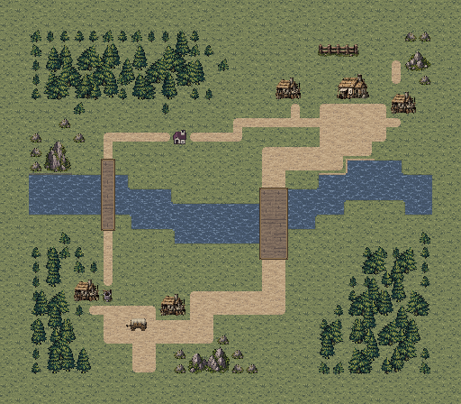
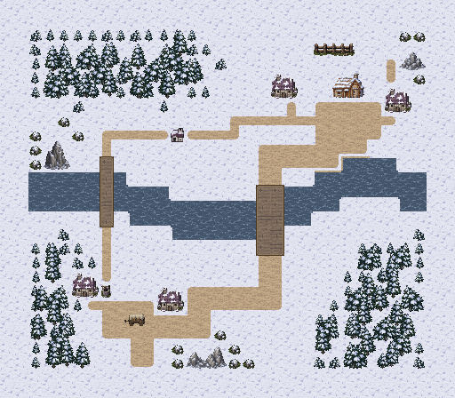
H02、H03、H05、H06、H07、H09六个室外据点同步寒季。H06清扫石院保留，其他院道仍可辨认；屋顶和林带换冬景。室内教堂H04、地下矿厅H08不积雪，修改前后原生截图像素相同。


六张关卡各完成两轮普通输入试玩，共12场、7,410次按键。另从M11真实通关记录连续完成 M12 → M13 → S11 → S12 → M14 → M15，3,151次按键，正常安置伤者、确认日返并进入第二章。各次通关的地图SHA均与最终地图一致。
| 地图 | 第一轮 | 第二轮 | 连续路线 |
|---|---|---|---|
| M12 | 8回合 | 7回合 | 8回合 |
| M13 | 12回合 | 12回合 | 16回合 |
| M14 | 5回合 | 5回合 | 7回合 |
| M15 | 6回合 | 6回合 | 7回合 |
| S11 | 10回合 | 11回合 | 10回合 |
| S12 | 10回合 | 10回合 | 10回合 |
1159项关卡规则与连通检查、1213项修改范围与素材检查、128项季节显示检查通过。18张战斗视口、15张世界图视口与8张据点视口完成后台捕获；战斗和世界图文字布局检查均无错误。独立应用从隔离目录加载，40张运行地图及新素材检查通过。
两轮逐关试玩使用真实开发记录的隔离副本，经正常整备和当前关卡入口重开；不等于两次新游戏全通。连续路线继承实际成长、装备与伤情，没有修改角色属性、随机结果或强制胜利。
首次连续尝试在刚完成M11、仅三名队员时先进入S11，第6回合矿工死亡导致失败。随后选择先推进粮站、押送所并招募，再回头完成支线的正常路线，六战连续通过；未为通过检查降低难度或修改规则。失败记录保留，不能把它解释成“支线任意时机都必能完成”。
全部原关卡逻辑、单位与交互位置、主流程、动画保持；仅世界与据点显示代码选择寒季美术。没有安装或试玩手机包；HTML资源检查不等于浏览器布局引擎验收。